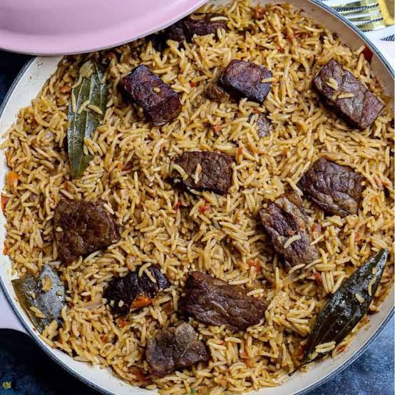

Home
Pilau Recipe

Description
A classic East African (Kenyan style) beef pilau is a one-pot aromatic spiced rice dish cooked with tender beef, deeply browned onions, and whole and ground spices
Ingredients
- 500g beef (cut into small bite-sized pieces)
- 2 cups long-grain basmati rice (washed and drained)
- 4 to 5 cups water or beef broth
- 2 large red or brown onions (finely sliced)
- 1 tablespoon ginger-garlic paste (or fresh crushed ginger and garlic)
- 1 to 2 tablespoons pilau masala
- Whole spices: cumin seeds, cardamom pods, cinnamon stick, and cloves
- 3 tablespoons cooking oil or ghee
- Salt to taste
Steps
- Place the beef chunks in a pot with a little water and a pinch of salt and cook until tender.
- Drain and reserve the beef stock/broth for later use.
- Heat the cooking oil or ghee in a large heavy-bottomed pot over medium heat,and Add the sliced onions and fry slowly until they turn a deep, dark golden brown
- Toss in the whole spices (cumin seeds, cardamom, cinnamon, cloves) and let them sizzle for 1 to 2 minutes until fragrant
- Stir in the ginger-garlic paste and cook for about 30 seconds until the raw smell fades.
- Add the boiled beef pieces and pilau masala. Sauté and let the meat toast in the spice mixture for a couple of minutes.
- Add the washed basmati rice and toss gently with the meat and spices for 2 minutes to toast the grains.
- Pour in your reserved beef broth plus enough hot water to equal roughly 4 cups of liquid (a 1:2 ratio of rice to liquid works best, or about 2 cups rice to 4 cups water).
- Season with salt to taste and stir once
- Bring the liquid to a rolling boil over high heat.
- Once most of the surface water reduces, lower the heat to the absolute minimum, cover the pot tightly (use foil under the lid if needed to trap steam), and let it simmer for 15 to 20 minutes until the rice is fully cooked and tender.
- Fluff gently with a fork and serve hot with fresh kachumbari (tomato and onion relish) or avocado